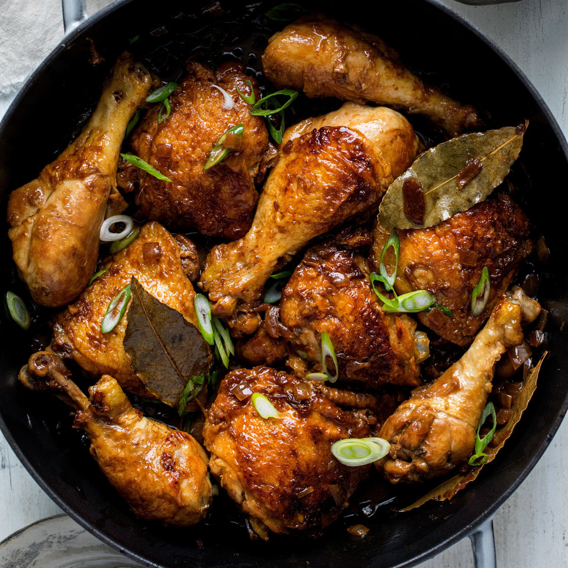

Chicken Adobo

About the Dish
Filipino Chicken Adobo is the national dish of the Philippines and may well become your new favourite Asian chicken dish! Just a few everyday ingredients I can practically guarantee you already have, it’s an effortless recipe that yields juicy, tender chicken coated in a sweet savoury glaze with little pops of heat from peppercorns.
Ingredients Needed:
CHICKEN AND MARINADE
- 750g/1.5 lb chicken thigh fillets ,boneless and skinless (5-6 pieces)
- 3 garlic cloves ,minced
- 1/3 cup (85 ml) soy sauce , ordinary all purpose or light (not dark soy sauce)
- 1/3 cup + 2 tbsp white vinegar
- 4 bay leaves (fresh) or 3 dried
FOR COOKING
- 2 tbsp oil , separated (vegetable, canola or peanut)
- 3 garlic cloves , minced
- 1 small brown onion , diced
- 1 1/2 cups (375 ml) water
- 1 tbsp whole black pepper (sub 2 tsp coarse cracked pepper)
SERVING
- 2 green onions/scallions , sliced (garnish)
Steps:
- Combine Chicken and Marinade ingredients in a bowl. Marinate for at least 20 minutes, or up to overnight.
- Heat 1 tbsp oil in a skillet over high heat. Remove chicken from marinade (reserve marinade) and place in the pan. Sear both sides until browned – about 1 minute on each side. Do not cook the chicken all the way through
- Remove chicken skillet and set aside.
- Heat the remaining oil in skillet. Add garlic and onion, cook 1 1/2 minutes.
- Add the reserved marinade, water, sugar and black pepper. Bring it to a simmer then turn heat down to medium high. Simmer 5 minutes.
- Add chicken smooth side down. Simmer uncovered for 20 to 25 minutes (no need to stir), turning chicken at around 15 minutes, until the sauce reduces down to a thick jam-like syrup.
- If the sauce isn't thick enough, remove chicken onto a plate and let the sauce simmer by itself - it will thicken much quicker - then return chicken to the skillet to coat in the glaze.
- Coat chicken in glaze then serve over rice.